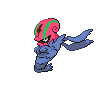

📖 英語版の図鑑説明
Discarding its shell made it nimble. To keep itself from dehydrating, it wraps its body in bands of membrane.
日本語訳
殻を脱ぎ捨て俊敏になった。脱水を防ぐため体を膜で覆う。
📝 この図鑑文に出てくる英単語
| 英単語 | 意味 | 品詞 | レベル |
|---|---|---|---|
| discarding | 捨てている | 動詞 | 大学 |
| shell | 殻、甲羅 | 名詞 | 中3 |
| nimble | すばしこい | 形容詞 | 大学 |
| dehydrating | 水分をうばう | 動詞 | 大学 |
| wraps | 包む | 動詞 | 中3 |
| bands | 帯(複数形) | 名詞 | 中2 |
| membrane | 膜 | 名詞 | 大学 |
文法ポイント from dehydrating は前置詞のあとに動詞のing形(動名詞)が続く形で、「〜することから」という意味です。
💡 英語名「Accelgor」の由来
英語名「Accelgor」は、accelerate（加速する）とescargot（フランス語で「カタツムリ」）を組み合わせた名前と考えられている。フランス語の名前は「Limaspeed」で、limace（ナメクジ）、speed（速さ）から作られている。
出典 Bulbapedia
📊 アギルダーの種族値
HP80
こうげき70
ぼうぎょ40
とくこう100
とくぼう60
すばやさ145
合計 495
❓ よくある質問
- アギルダーの英語名は？
- アギルダーの英語名は「Accelgor」です。
- アギルダーの英語名「Accelgor」の由来は？
- 英語名「Accelgor」は、accelerate（加速する）とescargot（フランス語で「カタツムリ」）を組み合わせた名前と考えられている。フランス語の名前は「Limaspeed」で、limace（ナメクジ）、speed（速さ）から作られている。
- アギルダーは英語版の図鑑でどう説明されている？
- 「Discarding its shell made it nimble. To keep itself from dehydrating, it wraps its body in bands of membrane.」と書かれています。日本語にすると「殻を脱ぎ捨て俊敏になった。脱水を防ぐため体を膜で覆う。」という意味です。
アギルダーは第5世代（イッシュ地方）のポケモンです。第5世代（イッシュ地方）の英語名一覧 →